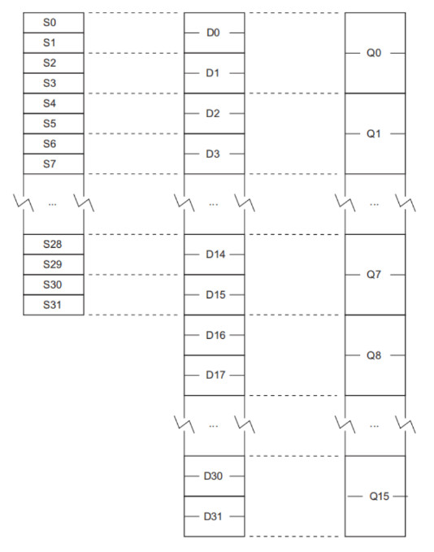

參考資訊： https://developer.arm.com/documentation/dui0473/j/neon-and-vfp-programming/extension-register-bank-mapping S0 ~ S31: 32 bits (4 Bytes) D0 ~ D31: 64 bits (8 Bytes) Q0 ~ Q15: 128 bits (16 Bytes)
